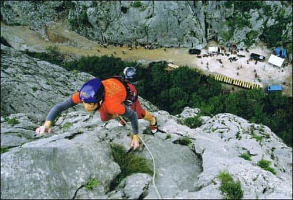
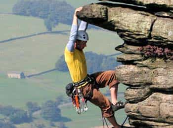
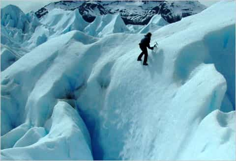

These days, opportunities for adventure and conquest are rare. That’s unfortunate, because masculine men naturally crave exploration. For us, the call of the wild is undeniable. But, let’s be realistic. Most guys aren’t gonna sell their stuff and live in the wilderness like filthy savages. A modern man can still test himself against nature’s wrath.
How?
Mountaineering.
Yes, mountain climbing. It’s one of the best ways for a man to plunge himself into a primal world of struggle and survival. Let’s explore the benefits.
A mountain expedition will put you in the best shape of your life. Ideally, you’d start training at 6-9 months before your climb. Having a clear reason to work out is a powerful motivator. Focusing your mind on your looming mission will keep you consistent. The training will likely put you in great shape. And then, there’s the climb. Your body will be consuming itself as the harsh conditions force you to burn to more calories than you can eat. You’ll be hard, strong, and incredibly ripped after a climb. Call it “the Mountaineering Cut.”

Feeling low? Bored? Suicidal? Unmotivated? You may just need a reminder of your mortality. A controlled brush with death. Peering into the maw of an icy black abyss will make you see your life differently. You’re in real physical danger in the mountains. Facing that WILL make you appreciate your limited time.
God stays in the mountains. If you’re a religious man, the intensity of your climb may cause spiritual revelations. Perhaps even epiphanies. Like Moses. If you’re not one of the Faithful? Well, you’ll still revel in nature’s glory. Because science.
The mountains make you humble. Despite your training and struggling, your goal may elude you. Contemplate your miniscule existence. Accept that you’re not a special snowflake. Just an insignificant speck of meaningless dust, floating along on an infinite white river of stars. And your clock is ticking.

Ascent will push you to the absolute limit. Mountaineering isn’t fun. Really, it’s the opposite. You’ll suffer as you face exhaustion, cold, snow, ice, altitude sickness, low oxygen, avalanche, falls, and countless other dangers. But your climb will harden you, physically AND mentally. It’s a true test of your ability to absorb and endure punishment.
If you’re like me, you don’t live near any serious mountains. But there are countless ranges located in exotic and beautiful places all over the planet. So now, you’ve got another good excuse to travel. So far, my climbs have taken me on multiple trips to California, Oregon, and Washington State.
Mountaineering isn’t a solo sport. Sure, whether you actually summit is up to you. But that doesn’t mean you climb alone. Ideally, you’ll have a crew of solid dudes with you. I have tight bonds with the three guys I’ve mountaineered with. Obviously, sharing life-threatening experiences forges strong ties.
I’m not an expert on outdoor survival. But the mountains have shown me a few tricks. Just a few things you may experience firsthand:

Want to experience the greatest shower ever? Try days of grueling, non-stop physical activity without changing clothes or bathing. All while shitting in paper bags, and having run out of soap. That first shower back down in the flat lands will be amazing.
Ultimately, you climb for yourself. It’s got nothing to do with girls. But successful mountaineering WILL indirectly strengthen your inner game. It’ll skyrocket your confidence. No matter who you are, or what you’ve done. And it’s no secret that women like bold and adventurous men. Dominate a few mountains and you’ll have incredibly rich stories to tell. Great big bait.
Of course, there are downsides to scaling peaks. Mountaineering is clearly risky; you could be killed or suffer serious trauma. And unfortunately, the sport isn’t exactly cheap. But, survive a climb and you’ll feel like a beast. With big brass balls and steel bands for legs. If you’ve got the means and courage, then you owe yourself an epic mountain adventure.
Now, go climb!
Read More: The Thrill Of The Mountain Makes You A Man